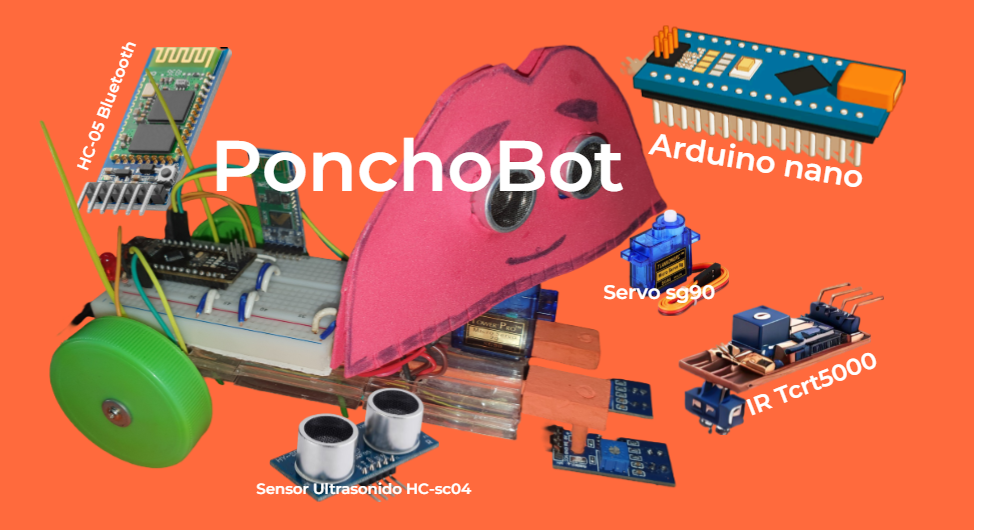

Qué vamos a aprender
- La conexión de nuestra placa Arduino Nano de PonchoBot con Pictoblox.
- El encendido y apagado de leds y la programación de un semáforo.
- A emitir beeps con un buzzer pasivo (parlante) y programar semáforos para disminuídos visuales.
¡¡Manos a la obra!!